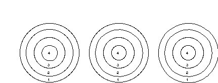

Overview
This laboratory will provide you with an opportunity to derive
a genetic model by careful observation of mutant phenotypes.
Three Arabidopsis mutants defective in flower organ identity
will be available for you to analyze. With these, it is possible
to construct a simple model that accounts for the observed phenotypes.
Double and triple mutants will also be provided so that you can
test the predictive power of your model.
The genetic control of flower organ development in Arabidopsis
and Antirrhinum (snapdragon) has been studied extensively,
and the "ABC model" has been derived to explain the
mutant phenotypes [reviewed in Coen and Meyerowitz, (1991) Nature,
353: 31]. Because many students are aware of the published work
in this field, this excercise will depend on each student independently
working toward a genetic explanation for the observed phenotypes.
ANALYSIS OF FLOWER MUTANTS:
Three flower development mutants (labeled 1, 2, and 3) and wild type will be provided.
1. Examine the flowers carefully. For wild type, sepals occupy whorl 1; petals whorl 2; stamens whorl 3; and carpels whorl 4. How many whorls do the mutant flowers have?
2. Using the following diagram, indicate which floral whorls
are affected in the mutants: Are flower organs within the whorls
absent? Or have they been converted into other organs?

Mutant 1 Mutant 2 Mutant 3
3. Indicate the domains in which each gene is required in WILD-TYPE
flowers. (Assume mutant 1 has a null mutation in gene 1; mutant
2 in gene 2; and mutant 3 in gene 3).

Gene 1 Gene 2 Gene 3
4. In wild-type flowers, indicate which genes are active in:
Whorl 1: ________________ = Sepals
Whorl 2: ________________ = Petals
Whorl 3: ________________ = Stamens
Whorl 4: ________________ = Carpels
Can this simple model account for the unique identity of each
whorl?
5. Using your model, reconsider the mutants. Indicate the genes
that are most likely active in each whorl in the mutant flowers:
(Remember that in mutant 1, gene 1 function is entirely absent,
so only gene 2 and gene 3 activities are relevant. A similar
logic can be applied to the other mutants.)
Mutant 1: Genes Organs
Whorl 1: ________________ = _______________
Whorl 2: ________________ = _______________
Whorl 3: ________________ = _______________
Whorl 4: ________________ = _______________
Mutant 2:
Whorl 1: ________________ = _______________
Whorl 2: ________________ = _______________
Whorl 3: ________________ = _______________
Whorl 4: ________________ = _______________
Mutant 3:
Whorl 1: ________________ = _______________
Whorl 2: ________________ = _______________
Whorl 3: ________________ = _______________
Whorl 4: ________________ = _______________
6. In the absence of gene 1, is the domain of gene 2 function
altered? Consider other pairwise combinations, and note any alterations
from the wild-type sites of gene activity.
Is it possible that genes 1, 2 and / or 3 regulate each other?
If so, how?
7. Using your model, predict the phenotype of the following
double and triple mutants. Again, for a mutant defective in genes
1 and 2, only gene 3 activity is relevant, and a similar reasoning
can be applied to all of the mutants.
Mutant 1 &2: Genes Organs
Whorl 1: ________________ = _______________
Whorl 2: ________________ = _______________
Whorl 3: ________________ = _______________
Whorl 4: ________________ = _______________
Mutant 2 & 3:
Whorl 1: ________________ = _______________
Whorl 2: ________________ = _______________
Whorl 3: ________________ = _______________
Whorl 4: ________________ = _______________
Mutant 1 & 3:
Whorl 1: ________________ = _______________
Whorl 2: ________________ = _______________
Whorl 3: ________________ = _______________
Whorl 4: ________________ = _______________
Mutant 1, 2 & 3:
Whorl 1: ________________ = _______________
Whorl 2: ________________ = _______________
Whorl 3: ________________ = _______________
Whorl 4: ________________ = _______________
8. A segregating population of double and triple mutants will
be provided. Look through these plants and try to identify the
individuals that you predicted in part 7.